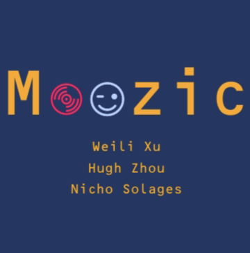
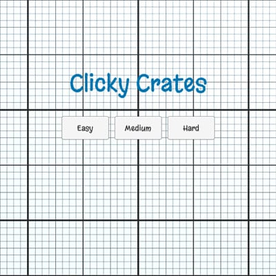

SKILLS
Game Design
The majority of my 3 years of GD experience has been through Unity. I've created interactive and dynamic gameplay elements through its scripting language: C#. I've implemented complex game mechanics, incorporating features such as, enemy behaviors and environmental interactions. Through their physics engine, I've created realistic and engaging simulations. My journey with Unity has been characterized by a commitment to continuous learning and improvement. I have tackled challenges ranging from optimizing game performance to troubleshooting scripting issues, demonstrating resilience and problem-solving skills.
Technical Code
With over 5 years of experience coding, I have immersed myself in various coding languages. Through System Programming and Computer Operating Systems, I've utilized C to work with device drivers, kernel development, memory management, file systems, concurrency, and synchronization. I have great deal of experience in Java where I have crafted various projects such as a Maze Generator, Tower of Hanoi simulator, and a boat menu simulator. I have diversified my experience in Game Development by learning C# through the Unity Game Engine. I have explored protein structure prediction through Perl where I incorporated various ML models. Lastly, I have utilized Python and JavaScript for the majority of my AI and ML projects for extracting and training my various models such as my Academic Advisor Chatbot and Music Emotion Matching App.
Web Development
The majority of my experience in Web Development spans from Sandbox and Webflow. I have designed various websites ranging from personal celebrity web pages to a music instructor feature site. My most notable achievement in WD is this personal portfolio site I built, where I am showcasing my Computer Science experience and knowledge as a whole.
EXPERIENCE
Bioinformatics Research Intern
I employed supervised learning techniques, utilizing Random Forest algorithms for multi-class classification. The primary objective was to predict protein secondary structure. This involved training Random Forest models through integrated scripts that leveraged the power of supervised learning. To enhance the performance of the models, I determined optimal parameters by striking a balance between predictive accuracy and model complexity. This process involved the implementation of machine learning techniques, with a particular focus on 5-fold cross-validation. The models were rigorously tested and validated, ensuring robustness and reliability in predicting the protein secondary structure.
PWC Start Intern
In my data science project, my team and I were tasked to extract and analyze data from various websites and build a pro bono report. We achieved this by implementing machine learning models to extract valuable insights from integrated datasets. This initiative aimed to enable predictive analytics and data clustering, facilitating trend identification and deeper insights within the datasets. Furthermore, we integrated AI virtual chatbots with advanced NLP capabilities and efficient dialog management through Power Virtual Agents. This strategic integration not only enhanced the existing AI functionality but also contributed to an overall improvement in customer and client engagement.
XR Innovate Apprentice Developer
In the projects I helped develop, I utilized Unity APIs to optimize performance, ensuring smooth and seamless interactions within our application. Additionally, I employed C# scripting to implement interactive features and create realistic simulations, thereby enhancing the overall user experience. To streamline the development process, our team adopted Agile methodologies, with a particular emphasis on SCRUM as the primary framework for project management. This involved daily meetings, close collaboration with team members, and setting target goals in alignment with the project team.
KRA Robotics Intern
As an intern I assigned diverse projects to a group of over 20 students, providing guidance and support through instructional assistance and collaborative problem-solving sessions. In the course of my own projects, I seamlessly incorporated both hardware and software programming methodologies, utilizing the Micro:Bit processor to facilitate the execution of various tasks and achieve project objectives. Moreover, one particular project I developed involved implementing functionalities that replicated the behavior of rabbits into a prebuilt robot using Hummingbird MakeCode programs.
MR Research Intern
As a Mixed Reality research intern in Professor Ching-Hua Chuan's Research Group, I actively participated in a project titled "Smart Assistant for Step-by-Step MR Training Apps," which focused on enhancing Mixed Reality (MR) training applications utilizing Microsoft's HoloLens. In the initial stages, I played a crucial role in a pilot study aimed at improving MR training applications. This involved working extensively with Microsoft's HoloLens technology. As part of my responsibilities, I utilized recorded study videos to implement a custom object recognition model. This involved employing transfer learning on the YOLOv5s model, addressing challenges specific to MR app design. Through this we enhanced the app's capabilities by customizing its ability to recognize objects and actions based on user interactions.
XR Machine Learning Intern
Work in progress...
PROJECTS
School Tutor Program
I developed an AI School Tutor application, aiming to achieve greater accuracy and precision in real-time emotion interpretation. Through CoreML I trained an AI application capable of identifying human emotions by developing an emotion recognition model. The training process involved analyzing facial features captured in images to enable the AI application to accurately identify a person's basic emotions. Then I integrated the model into an AI school tutor program which allowed for real-time interpretation of students' emotions through computer vision software. The AI school tutor was further programmed to dynamically adjust its teaching methods based on the interpreted emotions, thereby creating a personalized and adaptive learning experience for students.
Academic Advisor Chatbot
I created a conversational academic advisor chatbot with NLP capabilities, employing DialogueFlow as the foundational platform. The development process involved the design and implementation of various intents that enabled the chatbot to comprehend and respond effectively to user queries. To ensure accurate and contextually relevant responses, I coded fulfillment and entity pairings using JavaScript, aligning the chatbot's functionality with specific user needs. By leveraging DialogueFlow's NLP capabilities it fostered more dynamic and conversational interactions with users. The chatbot's training process was comprehensive, involving exposure to diverse question-answer pairings.
Fibonacci Thread Server
I managed various aspects related to system performance optimization and resource utilization for an optimal balance: signal handling for CPU usage control, implementing multithreading techniques to parallelize Fibonacci number computations, establishing interprocess communication between the server and UI program using pipes, and implementing resource management strategies to ensure the overall stability of the system. This involved strategic allocation and deallocation of resources to prevent bottlenecks and ensure optimal functioning of the system as a whole.
Puzzle Maze Game
I developed AI functionalities that enabled independent actions without user inputs, leveraging Breadth-First and Depth-First search algorithms. To provide a diverse range of challenges for the player, I generated a list of mazes using a two-dimensional array of nodes. These mazes were stored in a file directory, offering a variety of levels for the player's decision. The utilization of stacks and graphs played a key role in the generation and calculation of optimal paths within these mazes.
AI Emotion Reader
Trained an AI app using 200-song database attributing emotion tag to songs with arousal valence score. Each user was initially placed into a group of participants who had similar ratings implemented through KNN algorithm. Model utilizes the ratings of the participants group the user is placed in to recommend emotion matching songs. It adapts to user's ratings & in/decreases the size of the group through a linear regression model representing the rating reliability of each group member. It stores all this information and can then generate playlists in accordance to target emotions.
Unity Mouse Clicker Game
In essence I built a fruit ninja-esc mouse clicker game. I coded three levels of difficulty as presets ranging in object quantity and velocity. I incorporated a game score to keep track of the player's point total with most objects adding to it with a few undesirable ones that decrease it. I